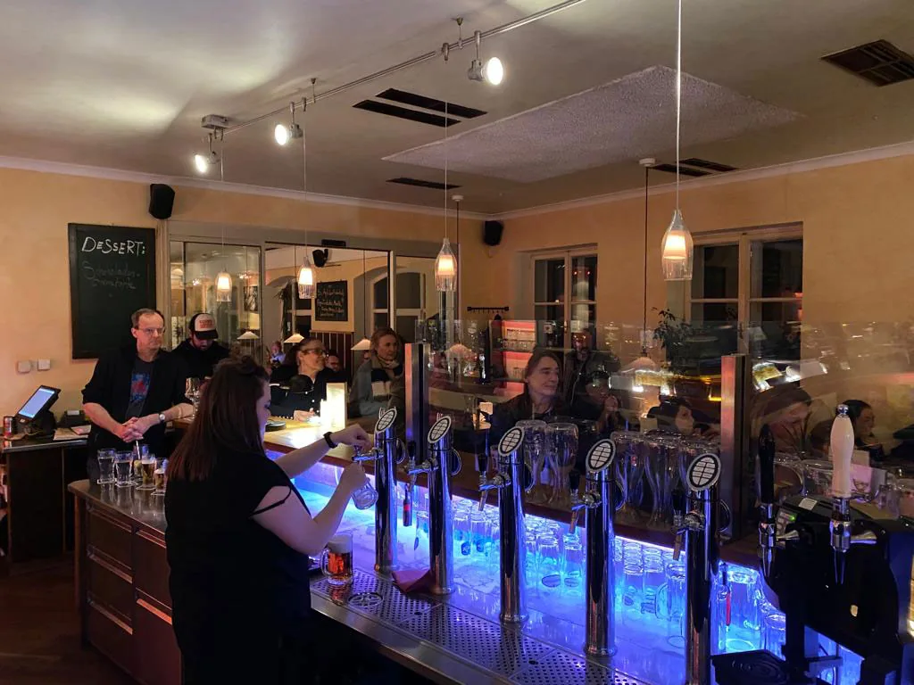
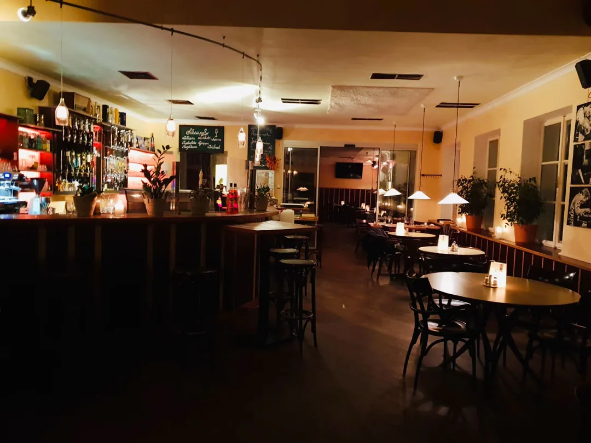
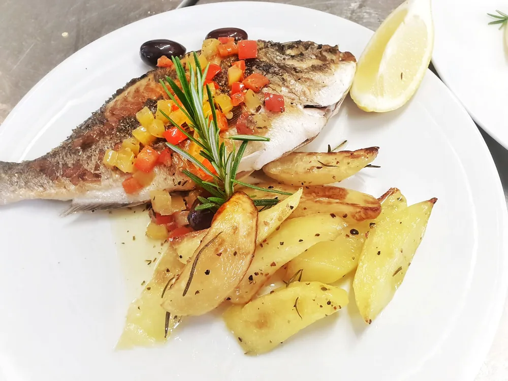
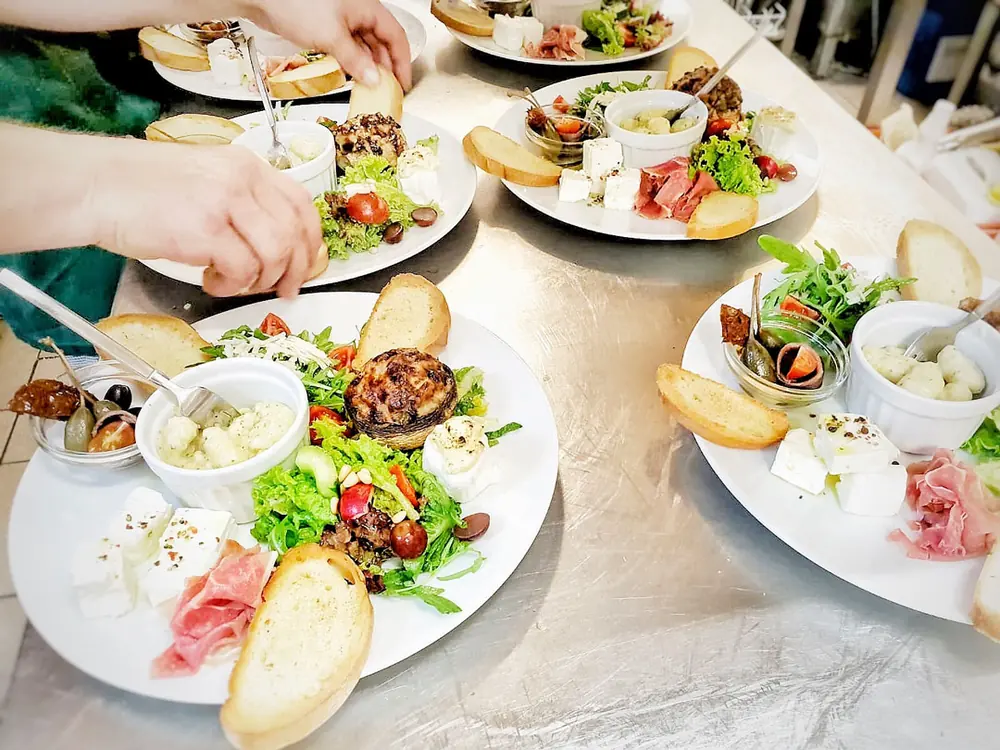
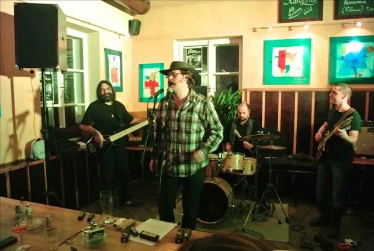
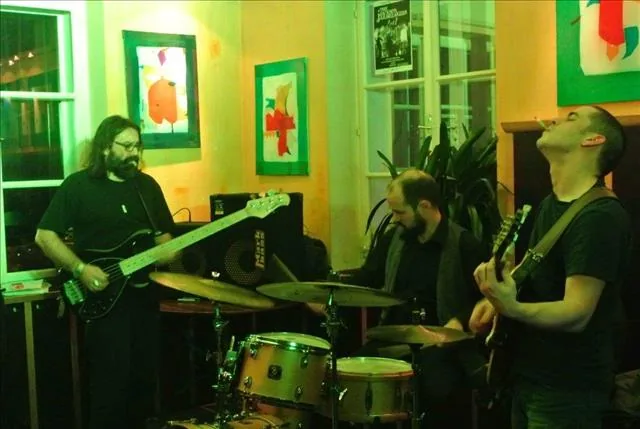
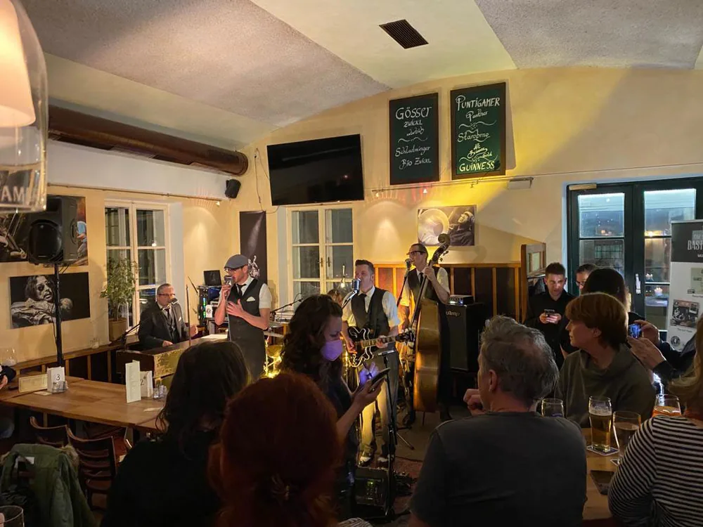

Seit 1858 ein Gasthaus
Eschenlaube
Ihr Kulturgasthaus im Herzen von Graz
- Montag
- 16:00 bis 01:00
- Dienstag bis Samstag
- 12:00 bis 01:00
- Sonntag, Feiertag
- geschlossen
Öffnungszeiten werden geladen
Das Haus
Hinter einer Mauer, hinter einem kleinen Tor
Zwischen den hohen Häusern der Glacisstraße tut sich eine Lücke auf. Ein kleines Tor führt in einen intimen Hof, und dahinter steht eines der schönsten Spätbiedermeierhäuser von Graz.
Die Fassade steht unter Denkmalschutz. Vor dem Haus gibt es im Sommer einen Garten.
In den Nachbarhäusern Nummer 61 bis 65 gingen im vorigen Jahrhundert bekannte Leute ein und aus: Robert Musil besuchte hier seine Großeltern, und im Haus Nummer 65 wohnte von 1898 bis 1917 der Komponist Wilhelm Kienzl.
Vom Fass
Fünf Sorten
Drei österreichische und tschechische Sorten, dazu zwei irische Biere vom Fass.
- Puntigamer Panther
- Gösser Zwickl
- Starobrno
- GuinnessIrisch
- KilkennyIrisch
Preise und Gebindegrößen stehen auf der Karte im Haus.


Sechs Tage die Woche
Bis ein Uhr früh geöffnet. Nach dem Konzert muss niemand aufbrechen.
Küche
Regional, und die Karte wächst
Gekocht wird regional. Die Karte wird laufend erweitert, und es kommt vor, dass ein Wunsch eines Gastes danach darauf steht.
Die aktuelle Speisekarte liegt im Haus auf.


Kulturgasthaus
Livemusik im Gastraum
Bei den Veranstaltungen geht es darum, lokale Musiker zu unterstützen. Jung oder alt, jeder bekommt eine Chance. Gespielt wird meist ab 20 oder 20:30 Uhr, und weil bis 1 Uhr früh offen ist, muss niemand mitten im Set aufbrechen.
- 09.06.2026Die Swinging Murcats
- 25.04.2026JK HABE
- 11.04.2026Prohibition Stompers, Hot Jazz der 1920er und 1930er
- 28.03.2026Pandoras kleine Schwester
- 14.03.2026Quartetto Novo
- 06. und 07.03.2026Old School Basterds
- 17.02.2026Cubara
- 14.02.2026Organ Experience, Souljazz
Ein Auszug aus dem bisherigen Programm. Die Swinging Murcats stehen fast jeden Monat auf dem Plan.



Vier Jahreszahlen
Vom Pferdestall zum Beisl
-
1795
Das Gebäude wird als Pferdestall errichtet.
-
1809
Inzwischen ist eine Saliterie darin, in der Schießpulver aus Salpeter erzeugt wird und die sich bis zur Haydngasse zieht. Napoleons Truppen besetzen sie und beschießen von hier aus den Schlossberg. Laut einem Chronisten trafen sie am 13. Juni Schlag zwölf Uhr das östliche Zifferblatt des Uhrturms.
-
1858
Aus dem kleinen Gebäude wird zum ersten Mal ein Gasthaus.
-
1985
Das Haus ist schon sehr baufällig und wird unter Denkmalschutz gestellt. Von Grund auf renoviert, hat es als Beisl wieder aufgesperrt.
Wann offen ist
Öffnungszeiten
| Tag | Geöffnet |
|---|---|
| Montag | 16:00 bis 01:00 |
| Dienstag | 12:00 bis 01:00 |
| Mittwoch | 12:00 bis 01:00 |
| Donnerstag | 12:00 bis 01:00 |
| Freitag | 12:00 bis 01:00 |
| Samstag | 12:00 bis 01:00 |
| Sonntag, Feiertag | geschlossen |
Bis ein Uhr früh
Die Eschenlaube sperrt erst um ein Uhr früh zu, sechs Tage die Woche. Nach einem Konzert oder nach dem Theater ist das ein Unterschied.
Der Hof
Im Sommer sitzt man vor dem Haus im kleinen Hof, von der Glacisstraße aus nicht einsehbar.
Offene Stellen
- Servicemitarbeiterin oder Servicemitarbeiter, Voll- oder Teilzeit
- Reinigungskraft, geringfügig
Bewerbungen an info@eschenlaube.at oder telefonisch unter +43 316 810457.
Tisch bestellen
Reservierung
Sonntage und Feiertage sind gesperrt. Die Uhrzeiten reichen an jedem Öffnungstag bis in den späten Abend.
Ihr Mailprogramm wurde geöffnet. Die Reservierung geht erst ein, wenn Sie die vorbereitete Nachricht auch absenden. Öffnet sich kein Fenster, rufen Sie bitte unter +43 316 810457 an.
Lieber telefonisch? +43 316 810457.
Es werden keine Daten gespeichert und keine Daten weitergegeben. Ihre Angaben gehen ausschließlich per E-Mail an das Gasthaus.
Kontakt
So finden Sie uns
- Adresse
- Glacisstraße 63
8010 Graz
Auf der Karte ansehen - Telefon
- +43 316 810457
- info@eschenlaube.at
Der Weg hinein
Vom Kaiser-Josef-Platz die Glacisstraße entlang, an den Häusern 61 bis 65 vorbei. Zwischen den hohen Häusern liegt eine Lücke mit einer Mauer und einem kleinen Tor. Durch das Tor kommt man in den Hof und zum Haus.
In eigener Sache
Diese Seite wurde als Vorschlag für die Eschenlaube gebaut.
Zwei Dinge fehlen auf Ihrer jetzigen Seite. Erstens die Speisekarte: Ein Gast, der wissen will, was es zu essen gibt, findet nur den Satz, dass die Karte laufend erweitert wird. Zweitens eine Reservierung, die auf der Seite selbst funktioniert, statt eines Kontaktformulars hinter einer Captcha-Sperre.
Dazu haben wir zwei Dinge nach vorne geholt, die sonst niemand hat: die Öffnung bis ein Uhr früh, sechs Tage die Woche, und Ihre Hausgeschichte. Ein Pferdestall von 1795, in dem Napoleons Truppen Schießpulver gemacht haben, erzählt sich besser als jeder Werbetext.
Was Sie hier sehen, ist die Startseite. Zur fertigen Website gehören außerdem:
- BierkarteAlle Fassbiere, Flaschenbiere, Weine und Preise.
- KücheIhre Karte. Es steht bisher keine online, wir setzen sie gemeinsam auf.
- LivemusikDas Programm, das Sie selbst pflegen, samt Archiv der Abende.
- Geschichte1795, 1809, 1858 und 1985, und das Spätbiedermeierhaus.
- KontaktDer Weg durch das Tor, der Hof und alle Kontaktdaten.
Mit dieser Startseite sind das sechs Seiten, fertig aufgesetzt.
einmalig für die komplette Website mit allen sechs Seiten, Texten, Bildbearbeitung und Reservierungsformular.
- Erstes Jahr Hosting inklusive, danach 30 Euro im Monat, monatlich kündbar.
- Eine Korrekturrunde ist enthalten.
- Die Website gehört Ihnen.
- Kleinunternehmer nach österreichischem Recht, es wird keine Umsatzsteuer ausgewiesen.